Replicates, controls, spike-ins and the quality metrics shared by epigenomic assays
You can align reads and make a coverage track (From reads to coverage). Whether that track means anything depends on decisions made before the first read was sequenced, and on a handful of numbers you should check before the first peak is called.
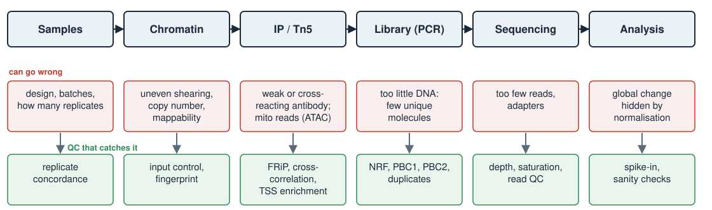
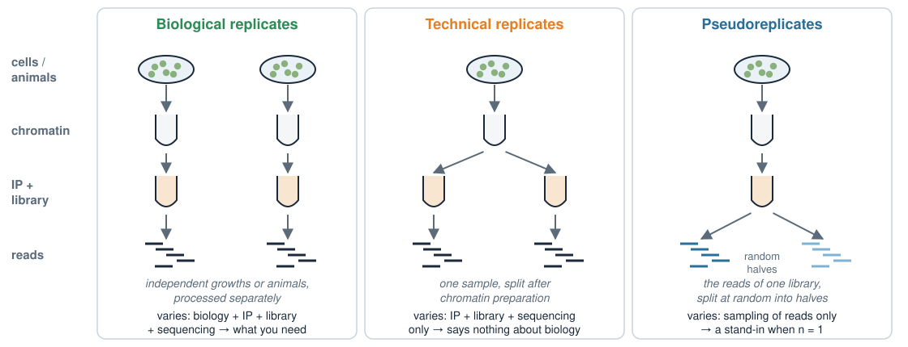
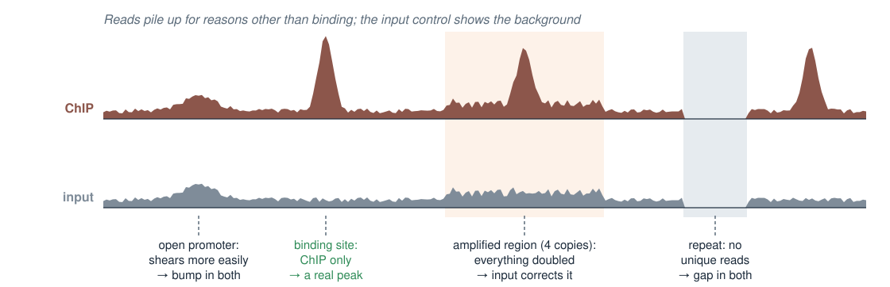
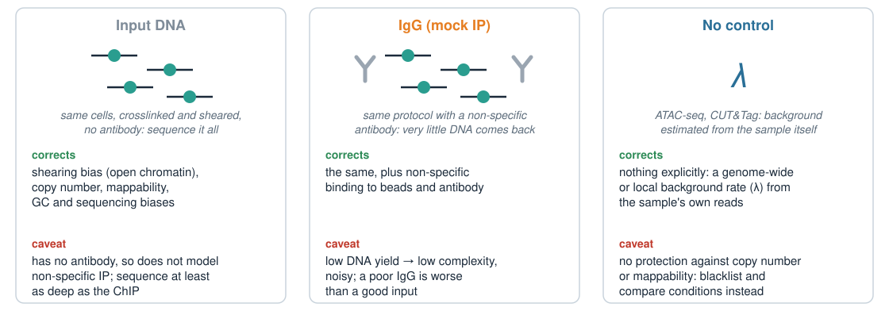
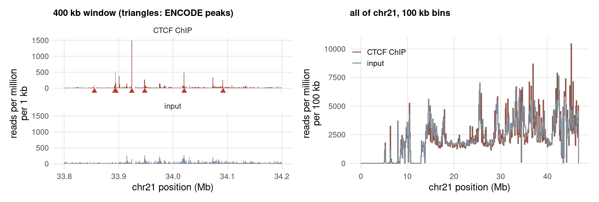
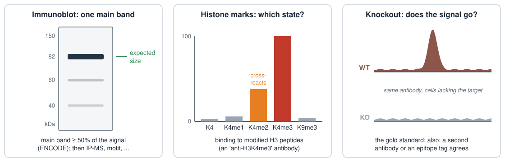
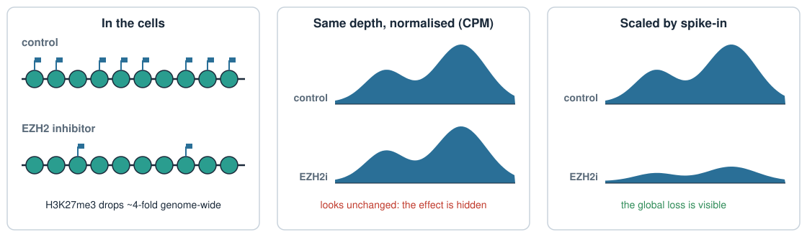
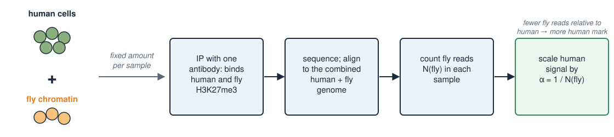
| control | EZH2 inhibitor | |
|---|---|---|
| reads mapped, total | 20 M | 20 M |
| reads on the fly genome, N_\text{fly} | 1 M | 4 M |
| reads on the human genome | 19 M | 16 M |
| reads in one H3K27me3 domain | 1900 | 1600 |
| per million human reads (CPM) | 100 | 100 |
| spike-in scaled, reads \times\ 1/N_\text{fly} | 1900 | 400 |
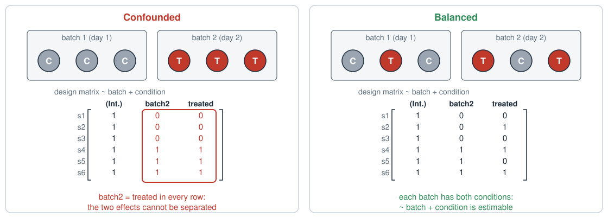
~ batch + condition, exactly as in DESeq2.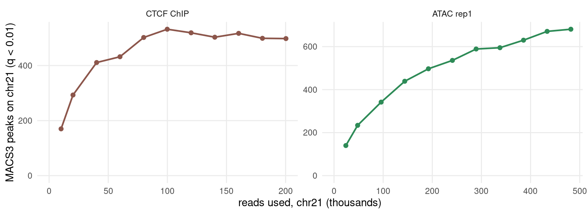
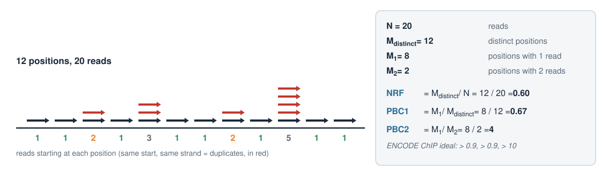
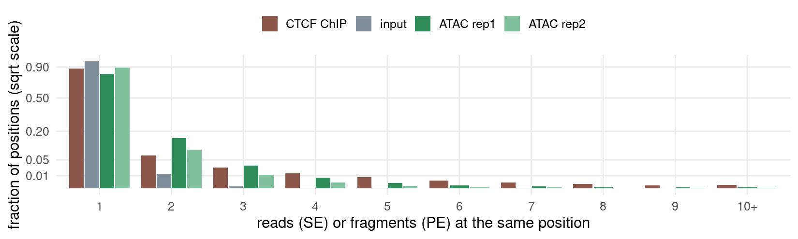
| chr21 | reads or fragments | NRF | PBC1 | PBC2 | duplicates | ENCODE, genome-wide NRF / PBC1 / PBC2 |
|---|---|---|---|---|---|---|
| CTCF ChIP | 251 469 | 0.80 | 0.88 | 13.1 | 20% | 0.75 / 0.84 / 9.9 |
| input | 110 212 | 0.99 | 0.99 | 77.9 | 1% | |
| ATAC rep1 | 316 185 | 0.80 | 0.80 | 5.2 | 20% | 0.79 / 0.80 / 5.1 |
| ATAC rep2 | 288 420 | 0.89 | 0.89 | 9.6 | 11% | 0.88 / 0.89 / 9.2 |
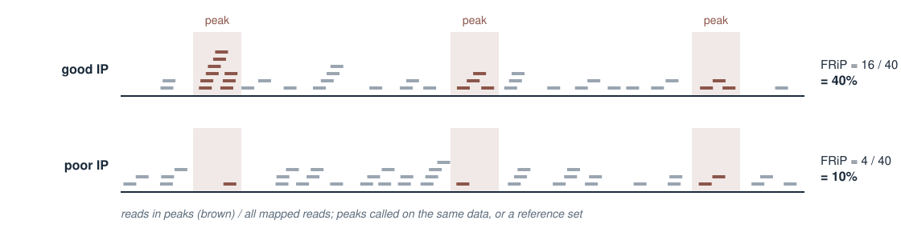
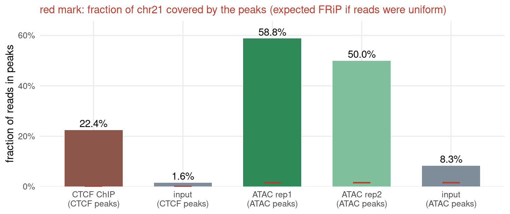
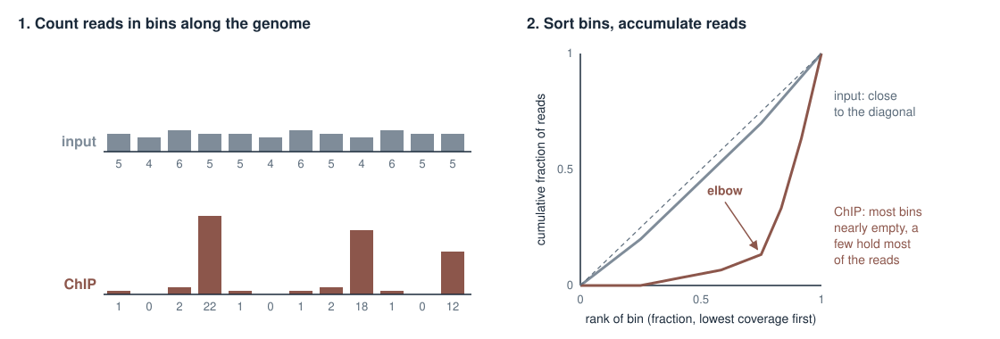
plotFingerprint, after the CHANCE method).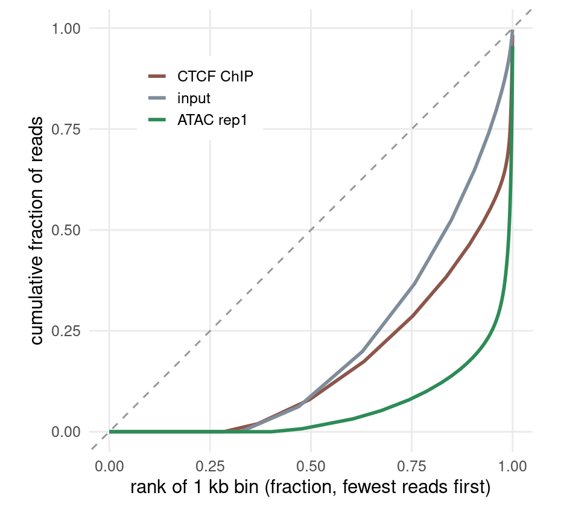
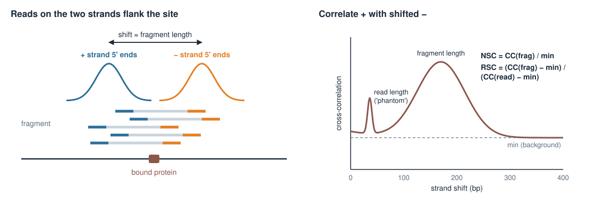
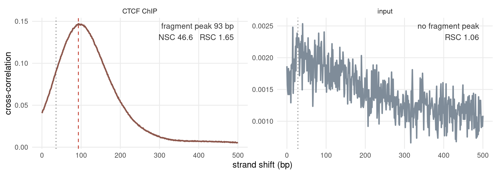
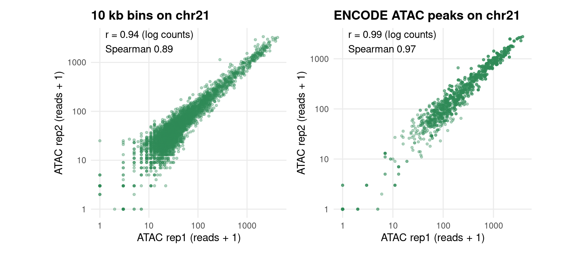
multiBamSummary, plotCorrelation). ATAC rep1 vs rep2: r = 0.94 (log counts) in 10 kb bins, 0.99 in ENCODE peaks.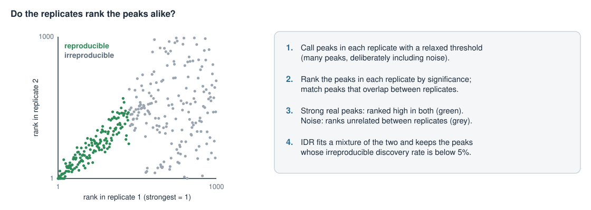
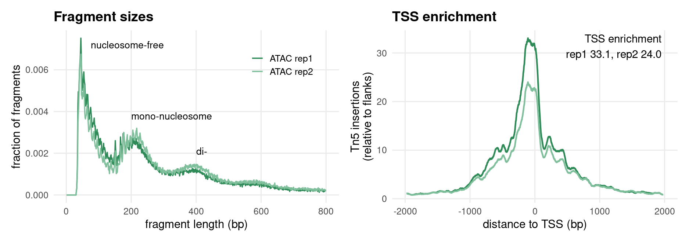
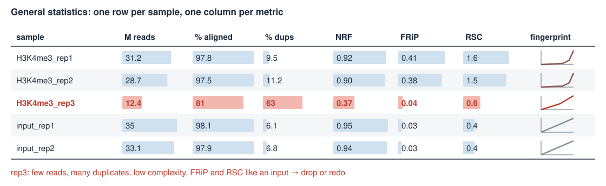
| metric | ChIP-seq (TF, histone) | ATAC-seq |
|---|---|---|
| replicates | ≥ 2 biological | ≥ 2 biological |
| depth per replicate | 20 M usable fragments (TF, narrow marks); 45 M (broad marks) | 25 M non-duplicate, non-mito fragments |
| control | input with matching run type and read length | none |
| NRF / PBC1 / PBC2 | > 0.9 / > 0.9 / > 10 (ideal); < 0.5 / < 0.5 / < 1 severe | > 0.9 / > 0.9 / > 3 |
| FRiP | TF: inspected if < 1% (Landt 2012); no fixed threshold now | > 0.3 (> 0.2 acceptable) |
| NSC / RSC | repeat if < 1.05 / < 0.8 (Landt 2012) | (not used) |
| reproducibility | IDR rescue and self-consistency ratios < 2 | IDR ratios < 2 |
| ATAC only | alignment > 95% (> 80%); TSS enrichment > 7 ideal, 5–7 acceptable (GRCh38, RefSeq); NFR and mono-nucleosome peak present |
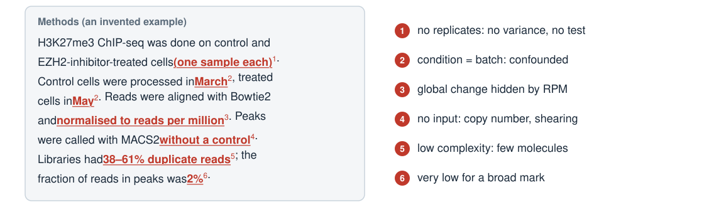
| idea | key fact |
|---|---|
| replicates | ≥ 2 biological (ENCODE), ≥ 3 per condition for differential tests; pseudoreplicates are not replicates |
| controls | input for ChIP (shearing, copy number, mappability); IgG often too little DNA; ATAC has none |
| antibodies | one main band, a second line of evidence, knockout loses the signal |
| global changes | depth normalisation hides them; spike-in chromatin, scale by 1/N_\text{spike} |
| batches | never confound with condition; model ~ batch + condition |
| complexity | NRF, PBC1 = M_1/M_\text{distinct}, PBC2 = M_1/M_2; computed before duplicate removal |
| enrichment | FRiP; fingerprint (input on the diagonal, ChIP bends); NSC, RSC from strand cross-correlation |
| reproducibility | correlation of binned counts; IDR on ranked peaks |
| ATAC | fragment-size ladder, TSS enrichment, mitochondrial fraction |
Not required reading and not examined. For those who want the primary literature.